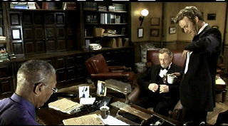
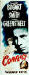

|
Under Suspicion (SE)/ C,A- |
|
Columbia/2001/110/ANA 1.85 |
There are probably only two reasons to see Under
Suspicion. One is to watch two great actors, Gene Hackman and Morgan
Freeman, go toe to toe in a verbal sparring match. The second reason is to
see the gorgeous Monica Bellucci stuffed into some tight-fitting
dresses. Unfortunately, Hackman and Freeman have to chew through
a plot so thick and inedible that they wind up with chunks of plot embedded
in their teeth. They may have even lost a tooth or two in the process. So
there's really only one reason to see Under Suspicion and that's Monica Bellucci; too bad she didn't get more screen time and a few more dresses to
try on.
 |
| The
interview begins. ©Columbia |
On the eve of a big benefit dinner during the annual
San Sebastian Festival in Puerto Rico, police captain Victor Benezet is
supposedly tying up some knots in a murder investigation. Prominent lawyer
Henry Hearst, a witness, agrees to drop by police headquarters to answer a
few questions before crossing the street in his tux to deliver the keynote
address at the benefit dinner. As the sparing begins, impatience and
antagonism form a the pattern of dialogue. Sex crimes poor preprandial
conversation.
Some of the plotting is almost comical. Why does police
captain Victor Benezet choose to bring in power lawyer Henry Hearst for
questioning before the benefit dinner, setting up a significant
conflict with the Police Superintendent? And why in heaven's name does
Chantal Heart wind up being interrogated in the next room. Hearst is a crack
lawyer. It's ridiculous for him to submit to the questioning when it goes
beyond the "only a few questions" with which Benezet lures him to the police
station.
In an attempt to open up the static script, director Stephen
Hopkins and company devise a highly stylized form of storytelling might work
with a better plot. It's interesting on its own, but of course, it calls
attention to itself. Dialogue strains at being clever leaving an itchy feeling to the movie in
a place you can't quite reach. Misplaced emotion rhythms prevent the film
from developing a natural flow. The subject of the investigation and layers of
details as they are revealed certainly makes you uncomfortable. Character motivation
is patently obtuse. There's a hint of an old
relationship between Benezet and Hearst, but it's a scent that isn't worth
much screen currency. Is Hearst a guy living on the edge of perversity. But
his actions never add up. His relationship with Chantal makes little sense.
There are too many dubious elements for Under Suspicion to overcome.
The performers are pros. It may be a difficult leap to see
Gene Hackman's Henry Hearst sporting a toupee, but Hackman can pull it off.
I could listen to Morgan Freeman recite dialogue forever and he's got a
mouthful to deliver as Benezet. Thomas Jane as Detective Owens is another matter
entirely. He can't rise above the miserably written role. Hell, Hackman and
Freeman barely survive. Monica Bellucci is thoroughly appealing as
Chantal Hearst, but watching her I felt a tinge of voyeur, for too close to
some already uncomfortable plot elements.
Wonderfully slick picture with beautiful night skyline
of Puerto Rico during the festival. Deep, dark blue sky with
outstanding detail and marvelous color. The costumes literally dance off the
screen. Hackman's tux maintains a deep black sheen without shorting the
wrinkled fabric details. The brightly lit day sequences maintain a
hyper-real look with a touch of extra saturation in the color and some
additional contrast. Overall, the picture is very sharp with edginess evident.
Interior lighting is delivered with plenty of range without compromising the
look. The Dolby Digital 5:1 surround sound is powerful with dialogue
delivered cleanly and music in good balance.
The special edition features commentary from director Stephen
Hopkins and star Morgan Freeman.
Reviewed on a Sharp 9000VX DLP Projector |
|
|
|

Selections from the
Feature Archive include articles on Akira Kurosawa,
Frank Darabont,
Blonde Bimbos,
Hollywood Street Gangs, or
Vietnam: The Hollywood Pariah, and many
more....
Body Parts

Hollywood's long fascination with parts of the body is explored
piece by piece.


The Movie Poster Archive
includes extensive poster images from the films of stars like Susan Hayward,
Kirk Douglas, Katharine Hepburn and many more. Our featured star is
Humphrey Bogart.

Mother Night/A-/A-
The eccentric style of Nick Nolte is perfect for the angst ridden Howard W.
Campbell, Jr., a hero or a villain.
 
ISF Monitor
Calibrations in the Tristate New York area. Lots of hardware info
and frequent hardware peaks from video expert Kevin Miller. They may be
judgmental, but that's the point, isn't it. Lots of DVD reviews plus news
and more.

Images is a non-commercial Web site created for everyone who enjoys movies
and popular culture. Images is published quarterly; however, new reviews
will appear each week, so check back often.

Timely DVD reviews and an
easy-to-use interface. Weekly contests.

DVD Dimensions sells DVDs
from an easy to use online interface.
|